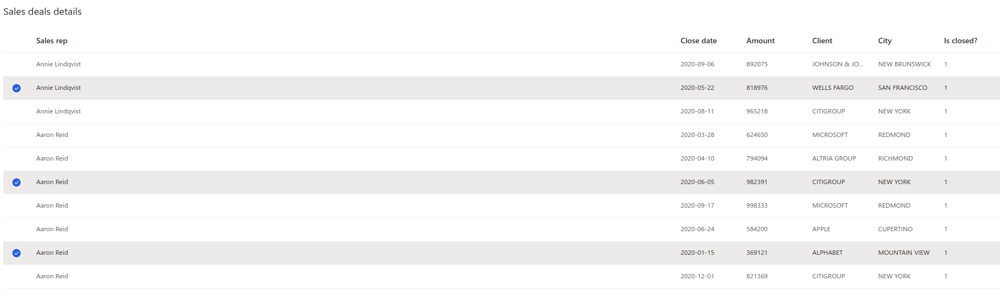
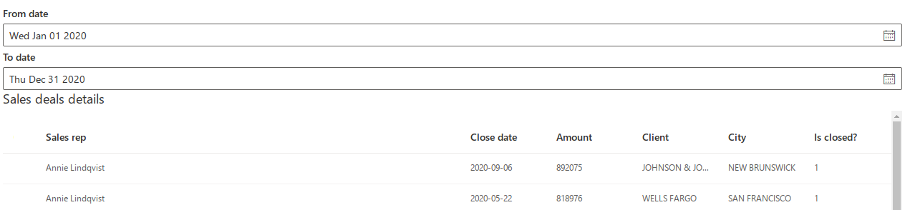
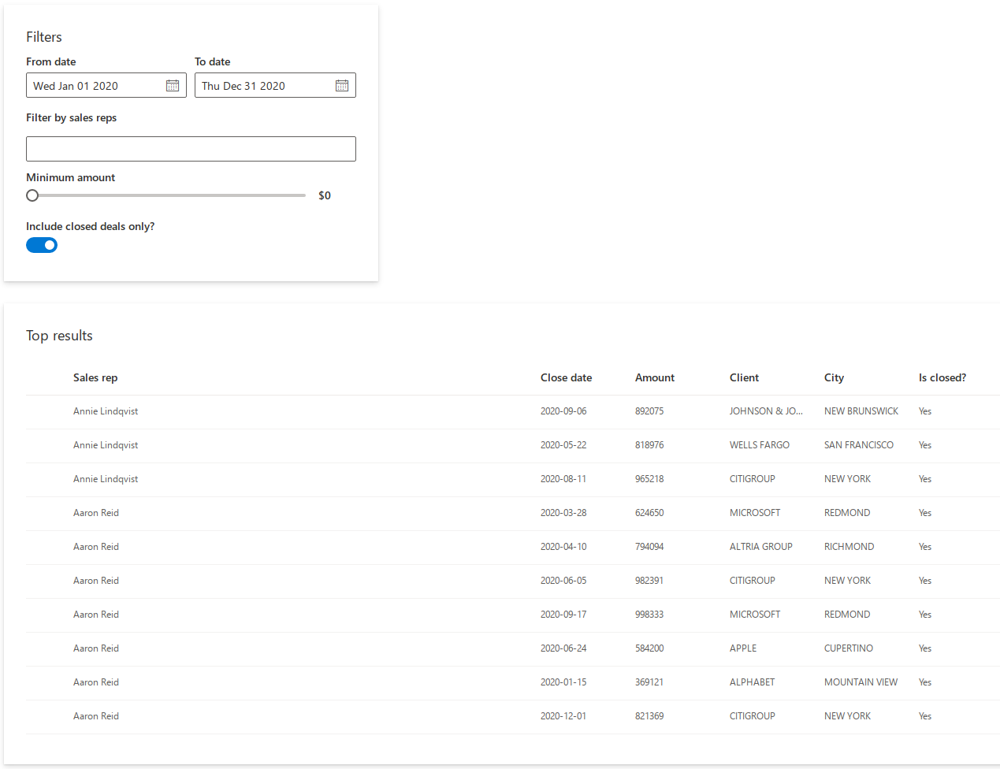
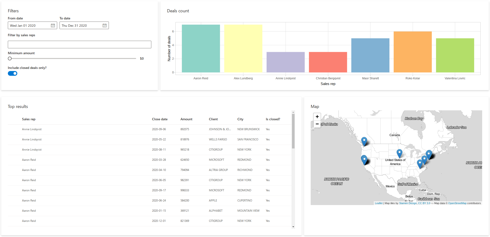

vignettes/shiny-fluent.Rmd
shiny-fluent.RmdLet’s learn shiny.fluent by building an example app.
In this tutorial, we’ll build a basic application for analysing sales results data. The app will allow for filtering the data, and viewing it on a plot, on a map and in a table.
We’ll assume that you have Shiny and shiny.fluent already installed.
Let’s start by creating an app that shows “Hello world!”, but does this with Fluent UI. First, we need to load shiny.fluent.
That gives us all we need to run a basic application! To create a UI showing a welcome message, we will use a Fluent component named ?Text. We’ll put it in a ?fluentPage, which will add proper CSS classes and suppress Bootstrap (you should not use both Bootstrap and Fluent UI at the same time).
ui <- fluentPage(
Text(variant = "xxLarge", "Hello world!")
)
server <- function(input, output, session) {}
shinyApp(ui, server)Let’s see what our app looks like right now.
Yay! It may not look very impressive, but this text is rendered in Shiny with the whole power of Fluent UI and React.
Let’s now grab some data and show it to our users in a table. shiny.fluent already includes some example data that we can use.
fluentPeople is a list of imaginary people in a format expected by some Fluent components.
fluentPeople %>% glimpse()
#> Rows: 7
#> Columns: 11
#> $ key <dbl> 1, 2, 3, 4, 5, 6, 7
#> $ imageUrl <chr> "https://static2.sharepointonline.com/files/fabric/offic…
#> $ imageInitials <chr> "PV", "AR", "AL", "RK", "CB", "VL", "MS"
#> $ text <chr> "Annie Lindqvist", "Aaron Reid", "Alex Lundberg", "Roko …
#> $ secondaryText <chr> "Senior Sales Rep", "Sales Rep", "Junior Sales Rep", "Se…
#> $ tertiaryText <chr> "In a meeting", "In a meeting", "In a meeting", "In a me…
#> $ optionalText <chr> "Available at 4:00pm", "Available at 4:00pm", "Available…
#> $ isValid <lgl> TRUE, TRUE, TRUE, TRUE, TRUE, TRUE, TRUE
#> $ presence <dbl> 2, 6, 4, 1, 2, 2, 3
#> $ canExpand <lgl> NA, NA, NA, NA, NA, NA, NA
#> $ color <chr> "#8DD3C7", "#FFFFB3", "#BEBADA", "#FB8072", "#80B1D3", "…fluentSalesData is a data frame of randomly generated “sales deals”, which are assigned to one of the fluentPeople, have a date and an amount, and are associated with one of the top 10 companies from the Fortune 500 list (including its name, city and map coordinates).
fluentSalesDeals %>% glimpse()
#> Rows: 100
#> Columns: 30
#> $ X <dbl> -8286952, -13595427, -13625773, -13595427, -8286952, -8234…
#> $ Y <dbl> 4938582, 6047180, 4550281, 6047180, 4938582, 4976415, 4938…
#> $ FID <dbl> 493, 234, 425, 234, 493, 333, 493, 284, 333, 284, 425, 234…
#> $ OBJECTID <dbl> 493, 234, 425, 234, 493, 333, 493, 284, 333, 284, 425, 234…
#> $ RANK <dbl> 35, 28, 25, 28, 35, 21, 35, 26, 21, 26, 25, 28, 28, 21, 21…
#> $ NAME <chr> "JOHNSON & JOHNSON", "MICROSOFT", "WELLS FARGO", "MICROSOF…
#> $ ADDRESS <chr> "1 JOHNSON AND JOHNSON PLAZA", "1 MICROSOFT WAY", "420 MON…
#> $ ADDRESS2 <chr> "NOT AVAILABLE", "NOT AVAILABLE", "NOT AVAILABLE", "NOT AV…
#> $ CITY <chr> "NEW BRUNSWICK", "REDMOND", "SAN FRANCISCO", "REDMOND", "N…
#> $ STATE <chr> "NJ", "WA", "CA", "WA", "NJ", "NY", "NJ", "NC", "NY", "NC"…
#> $ ZIP <chr> "08933", "98052", "94163", "98052", "08933", "10017", "089…
#> $ COUNTY <chr> "MIDDLESEX", "KING", "SAN FRANCISCO", "KING", "MIDDLESEX",…
#> $ EMPLOYEES <dbl> 126400, 114000, 269100, 114000, 126400, 243355, 126400, 20…
#> $ REVENUES <dbl> 71890, 85320, 94176, 85320, 71890, 105486, 71890, 93662, 1…
#> $ LATITUDE <dbl> 40.49804, 47.64005, 37.79340, 47.64005, 40.49804, 40.75598…
#> $ LONGITUDE <dbl> -74.44296, -122.12980, -122.40240, -122.12980, -74.44296, …
#> $ SOURCE <chr> "MANUAL", "BING MAPS", "BING MAPS", "BING MAPS", "MANUAL",…
#> $ PRC <chr> "ON-ENTITY", "ADDRESS", "ADDRESS", "ADDRESS", "ON-ENTITY",…
#> $ COUNTYFIPS <chr> "34023", "53033", "06075", "53033", "34023", "36061", "340…
#> $ COMMENTS <chr> "NOT AVAILABLE", "NOT AVAILABLE", "NOT AVAILABLE", "NOT AV…
#> $ WEBSITE <chr> "HTTPS://WWW.JNJ.COM/", "HTTPS://WWW.MICROSOFT.COM/EN-US/"…
#> $ PROFIT <dbl> 16540, 16798, 21938, 16798, 16540, 24733, 16540, 17906, 24…
#> $ deal_amount <dbl> 855987, 753174, 702208, 590190, 405443, 714723, 455713, 80…
#> $ rep_id <int> 1, 1, 1, 1, 1, 1, 1, 1, 1, 1, 1, 1, 1, 2, 2, 2, 2, 2, 2, 2…
#> $ rep_name <chr> "Annie Lindqvist", "Annie Lindqvist", "Annie Lindqvist", "…
#> $ date <date> 2020-02-19, 2020-08-18, 2020-10-14, 2020-02-23, 2020-10-1…
#> $ client_name <chr> "JOHNSON & JOHNSON", "MICROSOFT", "WELLS FARGO", "MICROSOF…
#> $ city <chr> "NEW BRUNSWICK", "REDMOND", "SAN FRANCISCO", "REDMOND", "N…
#> $ color <chr> "#8DD3C7", "#8DD3C7", "#8DD3C7", "#8DD3C7", "#8DD3C7", "#8…
#> $ is_closed <int> 0, 1, 0, 0, 0, 0, 0, 1, 0, 0, 0, 0, 1, 0, 0, 1, 1, 1, 0, 1…We now need a Fluent component to insert a table. A good way find a component that suits our needs is to go to shiny.fluent components live demo or to the official Fluent UI docs. Browsing through the list of components, we find ?DetailsList, which gives a table component with rich configuration options.
First, we need to define which columns from our deals data we want to see and how to label them.
details_list_columns <- tibble(
fieldName = c("rep_name", "date", "deal_amount", "client_name", "city", "is_closed"),
name = c("Sales rep", "Close date", "Amount", "Client", "City", "Is closed?"),
key = fieldName)Let’s now display our sales deals in a table. As we plan to later make the table change dynamically, we put it in a regular Shiny uiOutput. Let’s also assume that for now we want to filter out deals that have is_closed equal to 1.
ui <- fluentPage(
uiOutput("analysis")
)
server <- function(input, output, session) {
filtered_deals <- reactive({
filtered_deals <- fluentSalesDeals %>% filter(is_closed > 0)
})
output$analysis <- renderUI({
items_list <- if(nrow(filtered_deals()) > 0){
DetailsList(items = filtered_deals(), columns = details_list_columns)
} else {
p("No matching transactions.")
}
Stack(
tokens = list(childrenGap = 5),
Text(variant = "large", "Sales deals details", block = TRUE),
div(style="max-height: 500px; overflow: auto", items_list)
)
})
}
shinyApp(ui, server)In addition to ?DetailsList and ?Text, in the code above we used ?Stack, which arranges elements in its area.

Okay, that already looks good! But it’s hard to explore these data without some filtering options - let’s add that now. We will start by adding an option to find transactions between selected dates.
We will use two ?DatePicker components to allow users to choose a date range. To make the selected dates available in the server function, we have two options:
DatePicker.shinyInput convenience wrapper, which provides an interface analogous to vanilla Shiny inputs: inputId and optional value.onSelectDate and defaultValue in this case.The second option is less convenient but might provide more power and flexibility in some cases. We’ll go with the first option in this tutorial, as the simplified interface is sufficient for our needs.
filters <- tagList(
DatePicker.shinyInput("fromDate", value = as.Date('2020/01/01'), label = "From date"),
DatePicker.shinyInput("toDate", value = as.Date('2020/12/31'), label = "To date")
)Let’s add the filters to our UI:
ui <- fluentPage(
filters,
uiOutput("analysis")
)In the server function of our application, we can now access the input values using the IDs we provided in the same way as with any other Shiny input. Let’s use the selected dates to apply additional filtering to the deals:
server <- function(input, output, session) {
filtered_deals <- reactive({
req(input$fromDate)
filtered_deals <- fluentSalesDeals %>% filter(
date >= input$fromDate,
date <= input$toDate,
is_closed > 0
)
})This is what our application looks like now:

Let’s add more filtering options to our app! We will use the following components:
?NormalPeoplePicker to limit the search to selected sales representatives,?Slider to define a minimum deal size,?Toggle to show only the closed deals.In addition we’ll use ?Stack and ?Label to visually arrange the filtering controls.
filters <- Stack(
tokens = list(childrenGap = 10),
Stack(
horizontal = TRUE,
tokens = list(childrenGap = 10),
DatePicker.shinyInput("fromDate", value = as.Date('2020/01/01'), label = "From date"),
DatePicker.shinyInput("toDate", value = as.Date('2020/12/31'), label = "To date")
),
Label("Filter by sales reps", className = "my_class"),
NormalPeoplePicker.shinyInput(
"selectedPeople",
class = "my_class",
options = fluentPeople,
pickerSuggestionsProps = list(
suggestionsHeaderText = 'Matching people',
mostRecentlyUsedHeaderText = 'Sales reps',
noResultsFoundText = 'No results found',
showRemoveButtons = TRUE
)
),
Slider.shinyInput("slider",
value = 0, min = 0, max = 1000000, step = 100000,
label = "Minimum amount",
valueFormat = JS("function(x) { return '$' + x}"),
snapToStep = TRUE
),
Toggle.shinyInput("closedOnly", value = TRUE, label = "Include closed deals only?")
)Now that we have multiple filtering controls, it would be a good idea to add some visual separation between them and the table. Let’s define a helper function to create Fluent UI cards:
makeCard <- function(title, content, size = 12, style = "") {
div(
class = glue("card ms-depth-8 ms-sm{size} ms-xl{size}"),
style = style,
Stack(
tokens = list(childrenGap = 5),
Text(variant = "large", title, block = TRUE),
content
)
)
}Now we can wrap the filters in a call to makeCard(). Additionally, we include a style tag to add some padding and margin to the cards created by our helper function.
ui <- fluentPage(
tags$style(".card { padding: 28px; margin-bottom: 28px; }"),
makeCard("Filters", filters, size = 4, style = "max-height: 320px;"),
uiOutput("analysis")
)Let’s move our attention to the server function. We can access the values of the filtering controls using the provided IDs just like before.
server <- function(input, output, session) {
filtered_deals <- reactive({
req(input$fromDate)
selectedPeople <- (
if (length(input$selectedPeople) > 0) input$selectedPeople
else fluentPeople$key
)
minClosedVal <- if (isTRUE(input$closedOnly)) 1 else 0
filtered_deals <- fluentSalesDeals %>%
filter(
rep_id %in% selectedPeople,
date >= input$fromDate,
date <= input$toDate,
deal_amount >= input$slider,
is_closed >= minClosedVal
) %>%
mutate(is_closed = ifelse(is_closed == 1, "Yes", "No"))
})Finally, let’s refactor the table output and wrap it in a card.
makeCard("Top results", div(style="max-height: 500px; overflow: auto", items_list))Our filtering is much more useful now!

We are not limited to shiny.fluent components - we can seamlessly use other libraries in our app! Let’s add a Plotly plot and a Leaflet map. We start by adding a plotlyOutput() to our UI:
ui <- fluentPage(
tags$style(".card { padding: 28px; margin-bottom: 28px; }"),
Stack(
tokens = list(childrenGap = 10), horizontal = TRUE,
makeCard("Filters", filters, size = 4, style = "max-height: 320px"),
makeCard("Deals count", plotlyOutput("plot"), size = 8, style = "max-height: 320px")
),
uiOutput("analysis")
)We also add a leafletOutput() to the UI generated in the server function:
Stack(
tokens = list(childrenGap = 10), horizontal = TRUE,
makeCard("Top results", div(style="max-height: 500px; overflow: auto", items_list)),
makeCard("Map", leafletOutput("map"))
)Now we can add the following code to the server function to render a bar chart and a map:
output$map <- renderLeaflet({
points <- cbind(filtered_deals()$LONGITUDE, filtered_deals()$LATITUDE)
leaflet() %>%
addProviderTiles(providers$Stamen.TonerLite, options = providerTileOptions(noWrap = TRUE)) %>%
addMarkers(data = points)
})
output$plot <- renderPlotly({
p <- ggplot(filtered_deals(), aes(x = rep_name)) +
geom_bar(fill = unique(filtered_deals()$color)) +
ylab("Number of deals") +
xlab("Sales rep") +
theme_light()
ggplotly(p, height = 300)
})Look at our dashboard now!
